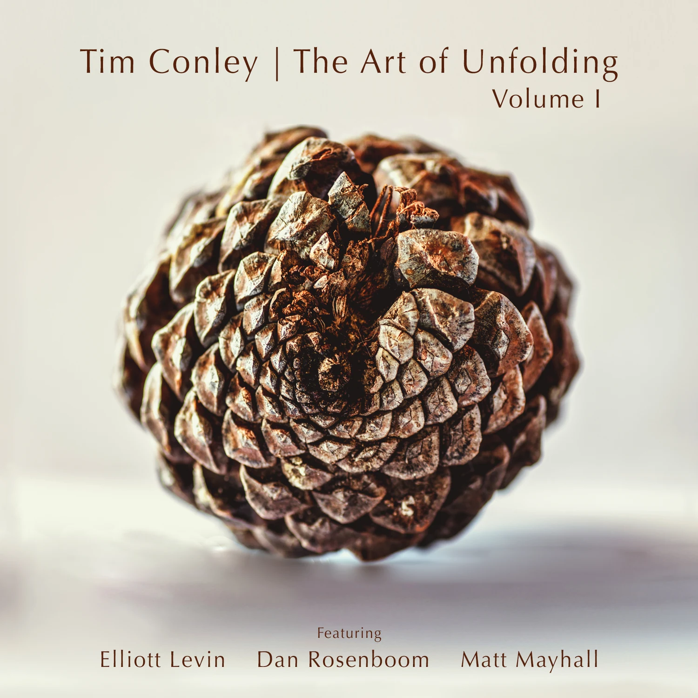

Album biography
About the work
In October 2018, Tim Conley, Elliott Levin, Dan Rosenboom and Matt Mayhall gathered at BoomHill Studios in Los Angeles for a one-take, uninterrupted improvisational performance. The nonstop set became fourteen linked tracks, each blooming into the next as it was performed.
Conley steps away from laptop-centered production and into the role of pure improviser. His guitar moves from spiritually ambient textures to angular abrasion through pedals, toys, slides and prepared-guitar techniques. Elliott Levin brings tenor saxophone, flute and spontaneous spoken word; Dan Rosenboom moves between ethereal cornet and charged intensity; Matt Mayhall shapes the music with deeply melodic, dynamic drumming.
The Art of Unfolding, Volume I is the first in an anticipated series of improvisational explorations centered on presence, collective listening and the emergence of form in real time.
Featuring
Tim Conley · Elliott Levin · Dan Rosenboom · Matt Mayhall
Personnel & credits
Label: Orenda Records
Release: May 24, 2019
Tim Conley — electric guitar
Elliott Levin — tenor saxophone, flute, spoken word
Dan Rosenboom — cornet
Matt Mayhall — drums
Recorded October 25, 2018 at BoomHill Studio, Los Angeles. Engineered, mixed and mastered by Dan Rosenboom. All music collectively improvised.
“The man’s approach to electronic music not only incorporates a whole lot of organic sounds — it feels composed with an ear tuned to jagged jazz and dark pop, which makes him kin to folks like Flying Lotus, Thundercat”— SPIN